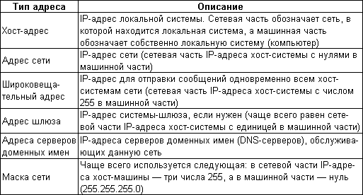
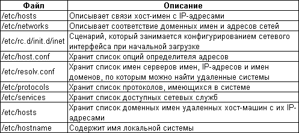

Linux в Сети. Сага вторая
Сегодня мы продолжим тему "Linux в Сети" и рассмотрим систему адресов.
Итак, начнем наш рассказ: Сага вторая, адресная.
Для более полного
понимания настройки сети в Linux рассмотрим IP-адрес и все, что с ним
связано.
Классический IP-адрес состоит из четырех числовых сегментов,
разделенных точками. Одна часть этого адреса представляет собой адрес сети, а
другая используется для обозначения конкретного хост-компьютера в этой сети.
Адрес сети обозначает сеть, частью которой является данный хост-компьютер.
Обычно сетевая часть адреса занимает первые три сегмента, а адрес машины —
последний сегмент. В совокупности сегменты образуют уникальный адрес, с
помощью которого идентифицируется любой компьютер в сети, работающей по
протоколам TCP/IP. Hanpимер, в IP-адресе 196.162.0.119 сетевой частью являются
цифры 196.162.0, а адресом компьютера в этой сети — 119. Итого: данный
компьютер является частью сети, адрес которой 196.162.0.119.
IP-адрес
хост-компьютера — это лишь один из нескольких адресов, которые необходимы для
подключения этого компьютера к сети. Кроме него, нам потребуются адрес сети,
широковещательный адрес, адрес шлюза, если он есть, адрес сервера имен и маска
сети. Все эти адреса система предлагает пользователю ввести во время своей
инсталляции. Если вы их ввели, то они будут автоматически занесены в нужные
конфигурационные файлы, а также автоматически прописана соответствующая
информация, которая прописывается при помощи netcfg. Для удобства ниже
приведен список используемых сетевых адресов:

Адрес сети можно
легко установить по адресу хост-компьютера: это сетевая часть адреса
хост-компьютера плюс нуль; например, в хост-адресе 196.162.0.119 адрес сети —
196.162.0.0.
Системы определяют адрес сети по адресу хост-компьютера с
помощь маски сети. Сделать это можно поразрядной операцией "И", проведенной с
маской сети и адресом хост-компьютера, что приведет к обнулению машинной части
адреса и получению его сетевой части.
Широковещательный адрес позволяет
системе посылать сообщение одновременно всем системам в сети. Как и сетевой
адрес, широковещательный адрес можно легко определить по адресу
хост-компьютера; машинная часть в нем установлена в 255, а сетевая часть не
меняется. Например, широковещательный адрес для адреса хост-компьютера
196.162.0.119 — 196.162.0.255 (т.е. сетевая часть адреса остается прежней, а
машинная меняется на 255).
Довольно часто один из компьютеров сети
назначают шлюзом, задача которого — обеспечивать взаимодействие с другими
сетями. Все соединения, устанавливаемые из данной сети с какой-либо другой и
наоборот, осуществляются через этот компьютер. Если вы работаете в сети с
подобной конфигурацией, то необходимо указать адрес шлюзового компьютера. Если
же шлюза в сети нет либо вы работаете в автономной системе (или, например,
через интернет-провайдера), то адрес шлюза не требуется.
Обычно адрес
шлюза имеет ту же сетевую часть, что и адрес хост-компьютера, но в его
машинной части стоит 1. Например, если адрес хост-компьютера — 196.162.0.119,
то адрес шлюза скорее всего администратор вашей сети сделал равным
196.162.0.1, но необязательно. Чтобы наверняка узнать адрес шлюза, обратитесь
к администратору вашей сети.
Во многих сетях есть компьютеры, которые
работают как серверы доменных имен, преобразуя доменные имена сетей и
хост-машин в их IP-адреса. Это позволяет идентифицировать ваш компьютер в
сети, пользуясь не IP-адресом, а доменным именем (например, linux.hitech.by:).
К другим системам тоже можно обращаться по доменным именам, поэтому их
IP-адреса знать необязательно. При этом, однако, следует знать IP-адреса
серверов доменных имен своей сети. Эти адреса (а, как правило, их несколько)
можно узнать у вашего администратора. Даже если вы работаете с
интернет-провайдером, вам нужно будет знать адреса серверов доменных имен,
которые обслуживает данный провайдер.
Маска сети используется для получения
адреса сети, к которой вы подключены, как уже было показано выше. При
определении маски сети адрес хост-компьютера выступает в роли трафарета. Все
числа в сетевой части хост-адреса устанавливаются равными 255, а в машинной
части ставится нуль. Это и есть маска сети. Так, маска сети для хост-адреса
196.162.0.119 — 255.255.255.0. Сетевая часть, 196.162.0, заменена на
255.255.255, а машинная часть, 119, заменена нулем. С помощью этой маски
системы определяют по вашему хост-адресу адрес вашей сети. Они могут
установить, какая часть адреса хост-компьютера является сетевой и из каких
чисел она состоит.
Все, что мы только что рассмотрели, нужно для
понимания того, что мы будем прописывать в файлах конфигурации, к рассмотрению
которых мы сейчас приступим.
Для настройки и поддержки работы сети,
работающей под управлением протоколов TCP/IP, используется набор файлов
конфигурации, расположенных в каталоге /etc. В этих файлах содержится
информация о сети — в частности, имена хост-машин и доменов, IP-адреса и
характеристики интерфейсов. Именно в эти файлы вводятся IP-адреса и доменные
имена других хост-компьютеров сети, к которым вы хотите получить доступ. Если
в процессе инсталляции системы вы конфигурировали сеть, то вся эта информация
в файлах конфигурации уже есть. Иначе ввести конфигурационные данные в эти
файлы можно с помощью программы netcfg или с помощью программы
netconfig.

Без уникального IP-адреса, которым в сети TCP/IP
идентифицируются компьютеры, нужный компьютер найти нельзя. Поскольку
IP-адреса трудны для запоминания и работы, вместо них используются доменные
имена. Каждому IP-адресу ставится в соответствие доменное имя. Система
преобразует доменное имя, по которому пользователь обращается к определенному
компьютеру, в соответствующий IP-адрес, и он используется для установления
соединения с указанным компьютером.
Вначале ведение списка хост-имен с
их IP-адресами было обязанностью всех компьютеров сети. Этот список до сих пор
хранится в файле /etc/hosts. Получив от пользователя доменное имя, система
ищет в файле hosts cooтветствующий адрес. За ведение этого списка отвечает
системный администратор. Вследствие стремительного роста Internet и появления
все новых очень больших сетей функции преобразования доменных имен в IP-адреса
были переданы серверам доменных имен. Тем не менее, файл hosts продолжает
использоваться для хранения доменных имен и IP-адресов хост-компьютеров,
соединения с которыми устанавливаются наиболее часто. Перед тем как обращаться
к серверу имен, ваша система всегда будет проверять файл hosts и искать в нем
IP-адрес заданного ей доменного имени.
Каждая запись в файле hosts состоит
из IP-адреса, пробела и доменного имени. Для хост-имени можно создавать
псевдонимы. В одной строке c записью можно ввести комментарий, который всегда
предваряется символом #. В файле hosts уже имеется запись для локального
компьютера localhost c IP-адресом 127.0.0.1 (по дефолту). Localhost — это
специальный зарезервированный IP-адрес 127.0.0.1, которой позволяет
пользователям вашей системы связываться друг с другом в локальном режиме. Он
служит для идентификации т.н. закольцовывающего интерфейса (loopback
interface).
Пример файла /etc/hosts:
127.0.0.1 xstranger.itk.by
localhost
196.162.0.119 xstranger.itk.by
222.111.232.11
aquarelle.tut.by
В файле /etc/networks хранятся доменные имена и
IP-адреса сетей, с которыми у вашей системы есть соединение, а не доменные
имена конкретных компьютеров. Сети имеют сокращенные IP-адреса. В зависимости
от типа сети в IP-адресах может использоваться одно, два или три числа.
Сетевой IP-адрес для localhost равен 127.0.0.0 (правила формирования описаны
выше).
IP-адреса записываются в файле /etc/networks вместе с
соответствующими им доменными именами сетей. Вспомните, что IP-адрес состоит
из сетевой части и машинной части. Сетевая часть — это адрес сети, который
хранится в файле networks. В этом файле всегда будет присутствовать отдельная
запись для сетевой части IP-адреса вашего компьютера. Это и есть адрес сети, к
которой подключен ваш компьютер.
Пример файла /etc/networks:
loopback
127.0.0.0
xstranger.itk 196.162.0.0
В файле /etc/rc.d/init.d/inet
находятся команды, обеспечивающие настройку сетевого соединения. Многие записи
в этом файле автоматически создаются при использовании утилиты netcfg и
конфигурировании сетевого соединения в процессе инсталляции. Например, здесь
находятся команды ifconfig и route. Кроме того, здесь задаются хост-имя вашей
системы, адрес сети и другие необходимые адреса. Непосредственно редактировать
этот файл можно лишь в том случае, если вы уверены в том, что все делаете
правильно и обладаете знаниями о программировании в shell. В разных
дистрибутивах Linux, например, файл инициализации может иметь несколько
отличающееся имя и располагаться в одном из подкаталогов каталога
/etc.
В файле /etc/HOSTNAME содержится хост-имя вашей системы. Чтобы
изменить имя, нужно отредактировать данный файл. Эту задачу можно также решить
с помощью программы netcfg, которая заменяет хост-имя и помещает новое имя в
файл /etc/HOSTNAME. Хост-имя можно узнать не только путем вывода на экран
этого файла, но и с помощью команды hostname в консоли.
Подготовил
X-Stranger, [email protected],
http://linux.hitech.by/
© компьютерная газета